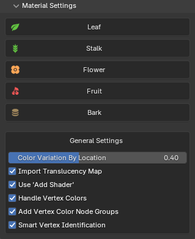

Material Settings

These settings allows you to configure the default settings that are used when importing the plants. Just click on any of the tabs to maximize them to see the settings as seen below.
Settings¶
The materials are categorized into Leaf, Stalk, Flower, Fruit, and Bark. Any materials that do not fit these categories will receive a generic shader, which can be adjusted later in the Post Processing panel.

- Translucency: Controls how much light passes through, affecting its brightness and realism when backlit.
- Hue
- Saturation
- Brightness
- Color Variation Random Per Leaf: Applies subtle hue variations to each leaf using random colors per geometry island, enhancing natural diversity.
- Normal Strength: This controls the Normal or Bump Strength. If no Normal is present, it uses Bump. If no Bump is present, it derives Bump from the Color texture.
- Wetness: The Wetness parameter simulates the effect of moisture on the leaf surface by reducing roughness. As wetness increases, the leaf's surface becomes smoother and glossier, mimicking the appearance of a wet leaf.
- Wetness affected by Normal: Determines whether the wetness effect is influenced by the surface orientation. When enabled, the shader adjusts the roughness based on the surface's normal, applying the effect primarily to top-facing surfaces (along the positive Z-axis). When disabled, the wetness effect is applied uniformly across all surfaces regardless of their orientation.
- Roughness from Color: Generates a Roughness map from the Color texture, breaking uniform roughness. Since most PlantFactory assets do not include dedicated Roughness maps and have a static value set, this feature provides an effective solution.

- Translucency: Controls how much light passes through, affecting its brightness and realism when backlit.
- Subsurface Weight
- Subsurface Scale
- Hue
- Saturation
- Brightness
- Normal Strength: This controls the Normal or Bump Strength. If no Normal is present, it uses Bump. If no Bump is present, it derives Bump from the Color texture.
- Wetness: The Wetness parameter simulates the effect of moisture on the stalk surface by reducing roughness. As wetness increases, the stalk's surface becomes smoother and glossier.
- Wetness affected by Normal
- Roughness from Color: Generates a Roughness map from the Color texture, breaking uniform roughness. Since most PlantFactory assets do not include dedicated Roughness maps and have a static value set, this feature provides an effective solution.
- Translucency: Controls how much light passes through, affecting its brightness and realism when backlit.
- Hue
- Saturation
- Brightness
- Color Variation Random Per Flower: Applies subtle hue variations to each flower using random colors per geometry island, enhancing natural diversity.
- Normal Strength
- Wetness: The Wetness parameter simulates the effect of moisture on the stalk surface by reducing roughness. As wetness increases, the stalk's surface becomes smoother and glossier.
- Wetness affected by Normal
- Roughness from Color: Generates a Roughness map from the Color texture, breaking uniform roughness. Since most PlantFactory assets do not include dedicated Roughness maps and have a static value set, this feature provides an effective solution.

- Translucency: Controls how much light passes through, affecting its brightness and realism when backlit.
- Subsurface Weight
- Subsurface Scale
- Hue
- Saturation
- Brightness
- Color Variation Random Per Fruit: Applies subtle hue variations to each fruit using random colors per geometry island, enhancing natural diversity.
- Normal Strength: This controls the Normal or Bump Strength. If no Normal is present, it uses Bump. If no Bump is present, it derives Bump from the Color texture.
- Wetness: The Wetness parameter simulates the effect of moisture on the flower surface by reducing roughness. As wetness increases, the flower's surface becomes smoother and glossier. This wetness effect is applied on top of any other roughness adjustments made to the material.
- Wetness affected by Normal
- Roughness from Color: Generates a Roughness map from the Color texture, breaking uniform roughness. Since most PlantFactory assets do not include dedicated Roughness maps and have a static value set, this feature provides an effective solution.
- Hue
- Saturation
- Brightness
- Normal Strength: This controls the Normal Strength. If no Normal is present, it uses Bump. If no Bump is present, it derives Bump from the Color texture.
- No Normal: Bump Strength: This controls the Bump Strength if no Normal map is present.
- Roughness from Color: Generates a Roughness map from the Color texture, breaking uniform roughness. Since most PlantFactory assets do not include dedicated Roughness maps and have a static value set, this feature provides an effective solution.
These settings affect all material types.
- Color Variation By Location: Introduces subtle hue variations based on plant location to reduce uniformity and enhance realism when multiple plants of the same species are nearby.
- Import Translucency Map: Uses the translucency texture (if found) instead of a static translucency value. If you want more control over translucency, you can disable this option and adjust the static value slider instead. Note: If the output looks odd, see The translucency for my plant looks off in the FAQ.
- Use 'Add Shader': Use a Add Shader node to combine translucency with the main shader, instead of using a standard Mix Shader. This approach can provide more artistic control by directly adding light contributions from both shaders. However, it may sacrifice physical accuracy and break energy conservation, potentially resulting in unrealistic brightness or lighting behavior. This affects Leafs, Stalks and Flowers.

-
Handle Vertex Colors: When enabled, this checks for any 'Vertex Colors' and adds a 'Color Attribute' node to the identified materials.
- Add Vertex Color Node Groups: Adds node groups to assist with color randomization based on Vertex Colors.
- Smart Vertex Identification: Enable smarter vertex color identification by detecting meaningful (non-uniform) vertex colors. When disabled, a simpler algorithm checks for any use of vertex colors, which may include single-color meshes.
-
Create & Import:
- Material Color: Import material color vertex data (RGB channel).
The material color is meant for colorizing the material directly. All you need to do is to plug the vertex color node directly into the color or diffuse slot of each material whose color you want to control with the vertex color set. - Blending: Import material blending vertex data (RGB channel).
Material blending is a greyscale mask that allows to smoothly blend between two different materials or texture maps on the plant, e.g. between a trunk material and a branch material. -
Ambient Occlusion: Import ambient occlusion vertex data (RGB channel).
Ambient Occlusion contains pre-baked shadows in crevices and parts of the mesh which cannot be reached by light so easily. It emphasizes the overall shape of the plant and can produce improved lighting results, especially in real-time projects.Ambient Occlusion
Please note that this feature requires additional processing to bake the colors and can be significantly slower depending on the complexity of the plant.
-
Hierarchical Level: Import hierarchical level vertex data (RGB channel)
- Leaf Color Shift (HLS): Import leaf color shift vertex data (RGB channel).
The leaf color shift contains color correction data in the form of hue (R), lightness (G) and saturation (B) values from the leaf node in PlantFactory which create random color variations across all leaves. See the PlantFactory Reference Manual (page 890) for details.
To use the actual vertex data in the Shader Editor, access the PF2B menu via the right-click context menu and add the 'Color Shift' node group. This node group handles the color shift as described in the PlantFactory manual and is a recreation of the OSL script provided by PlantFactory.
- Material Color: Import material color vertex data (RGB channel).
Vertex Colors
The plants in the PlantCatalog and PlantFactory libraries do not make practical use of most vertex color channels. Material Color, Material Blending, and Ambient Occlusion can be generated during import if enabled, but the library plants are not authored to use these channels in any meaningful way. Hierarchical Level and Leaf Color Shift are also not configured in the library plants and will only contain useful data if they are manually defined.
As a result, if you are only using plants from the PlantCatalog or PlantFactory libraries, these settings can generally be left disabled. All vertex color channels can be created and imported, but they will only produce meaningful results when working with custom plants that are explicitly authored to use them.
For practical examples and setup guidance, see the example usage section below.
Tips
- You can reset the settings to default by clicking on in the top right corner.
- Remember that you can always edit these settings for the plants after import by going to the Post Processing panel.
Note on Roughness
As you might have noticed, the roughness slider is not available here. This is because the value is imported from PlantFactory and should not be set manually during import. However, you can modify it after import via the Post Processing panel if needed.
Keep in mind that this static roughness value will be overridden if a roughness texture is used or if the "Roughness from Color" option is enabled.
Settings Explained with Examples¶
Color Variation Random Per Leaf/Flower/Fruit¶
Applies subtle hue variations to each Leaf/Flower/Fruit using random colors per geometry island, enhancing natural diversity.
As seen here, it is first set to the maximum value of 1.0, where clear color variations appear on the leaf. In the next example, it is set to 0, ensuring no color variation is applied and only the raw color from the leaf texture is used for the color.

This setting is available for leaf, flower, and fruit materials. The default value is set approximately in the middle to provide subtle variation, but it's worth experimenting to find the best setting for your case.
Wetness¶
The Wetness parameter simulates the effect of moisture on the stalk surface by reducing roughness. As wetness increases, the surface becomes smoother and glossier.
The first example shows the wetness parameter set to 1.0 for a fully wet leaf, while the second example has it set to the minimum for a dry leaf. This setting is available for leaf, stalk, flower, and fruit materials.
Please note that the wetness is set at a high value just to demonstrate the effect and may not represent the ideal setting for every situation. It's worth experimenting to find the best setting for your case.
Wetness affected by Normal¶
Determines whether the wetness effect is influenced by the surface orientation. When enabled, the shader adjusts the roughness based on the surface's normal, applying the effect primarily to top-facing surfaces (along the positive Z-axis). When disabled, the wetness effect is applied uniformly across all surfaces regardless of their orientation.
In these videos, you’ll see examples of how the roughness of a leaf is influenced by its orientation when the Wetness Affected by Normal setting is enabled. As in real life, a more vertical leaf accumulates less water on its surface. By default, this setting is enabled for leaves, but it's worth experimenting to find the best setting for your case.
This video focuses solely on the roughness texture of the leaf to showcase how it changes with varying wetness levels. The brighter areas of the leaf indicate a rougher texture, while the darker areas represent higher wetness, resulting in a smoother, glossier appearance.
This video demonstrates the leaf with its complete texture, illustrating how wetness subtly affects its appearance. While the effect may be difficult to discern in the video, it contributes to the overall realism when applied to a full plant with multiple leaves.
Please note that the wetness is set at a high value just to demonstrate the effect and may not represent the ideal setting for every situation.
Roughness from Color¶
Generates a Roughness map from the Color texture, breaking the uniform roughness. Since not all PlantFactory assets do not include dedicated Roughness maps and have a static value set, this feature provides an effective solution.

Adjusting Roughness
To adjust the roughness of a specific material:
- Open the material in the
Shader Editor. - Locate the Shader, and find the
Roughness from Colorsection at the bottom. - Make adjustments until the material looks right to you or fits your use case, as there are no strict rules.
Previewing Roughness
If it's hard to see the effects of the roughness adjustments:
- Temporarily connect to the "Roughness Preview" output, as described in the shader previews section. In this view, you will see a raw output of the roughness channel, where pure white color indicates full roughness (resulting in a matte finish), while darker shades indicate less roughness.
Example
Here is a demonstration showcasing the preview of roughness and how to adjust the values. It's straightforward to modify the settings to achieve the desired look, whether you want a fully inverted roughness map to make certain areas of the material glossy or to emphasize details like the veins in the leaf.
Color Variation By Location¶
Introduces subtle hue variations based on the location of the plant, enhancing realism and reducing uniformity, especially when multiple plants of the same species are nearby.
Below is a video demonstrating the effect as a plant moves, showcasing changes in hue and brightness. While these changes may be subtle in the video, they significantly enhance the visual diversity of closely situated plants.
Use 'Add Shader'¶
Use a Add Shader node to combine translucency with the main shader, instead of using a standard Mix Shader. This approach can provide more artistic control by directly adding light contributions from both shaders. However, it may sacrifice physical accuracy and break energy conservation, potentially resulting in unrealistic brightness or lighting behavior.
Below is a gallery showcasing comparisons between the Mix Shader and Add Shader. Notice how, in the front-facing examples, the Mix Shader absorbs more light as translucency increases, creating a more realistic effect, while the Add Shader does the opposite, making the surface appear brighter.
By default, PF2B uses a Mix Shader with translucency set to 0.3, striking a good balance for realism. However, feel free to experiment, depending on your lighting conditions, using an Add Shader may provide more visually striking results that better suit your use case.


Front Angle


Back Angle


{kind=link}
{kind=link}
{kind=link}
{kind=link}
{kind=link}
{kind=link}
{kind=link}
{kind=link}
{kind=link}
{kind=link}
{kind=link}
{kind=link}
{kind=link}
{kind=link}
{kind=link}
{kind=link}
{kind=link}
Vertex Colors¶
Vertex colors can be used to create various color variations on a plant, allowing for more detailed control over its appearance, such as adding gradients or simulating natural color transitions across different parts of the plant.
Note that none of the plants in the PlantCatalog & PlantFactory libraries use/have vertex colors applied by default. However, you can enable vertex colors on a per-plant basis by using the Browse via PlantFactory mode.
For more information on using Vertex Colors from PlantFactory, refer to page 887 of the PlantFactory manual (accessible via PlantFactory > Help > Reference Manual).
Here is a video from Bentley that demonstrates how to set up Vertex Colors:
Add Vertex Color Node Groups
If you want to use the Add Vertex Color Node Groups option to add some color variations, which adds node groups to assist with color randomization based on Vertex Colors, see this simple example:
This example demonstrates a linear gradient from 1 to 0, moving from bottom to top. You can download the file here (629KB) to test it yourself.
{kind=link}
Once imported into Blender, it should look like this:
{kind=link}
Shaders¶
The materials use carefully crafted custom Node Groups that are highly customizable.

Logic¶
The shader nodes has logic built in to handle various different scenarios with various configurations or missing textures automatically.
Logic Examples
- Roughness handling:
- If
Roughness textureis connected it will be used. - If no
Roughness textureis connected:- A dynamic roughness map is created from the color texture if the 'Roughness from Color' option is enabled.
- A static roughness is used from the 'Roughness' slider value if the 'Roughness from Color' option is not enabled.
- If
- Translucency handling:
- If
Translucency textureis connected it will be used. - If no
Translucency textureis connected the static value from the 'Translucency' slider will be used.
- If
-
Normal handling:
- If a
Normal textureis connected it will be used. - If no
Normal textureis connected it will use:Bump textureif connected.- If no
Bump textureif connected it will derive a bump map from the color texture.
- If a
-
Double sided leaf shader:
- If nothing is connected into "Backface Color" it will use the frontface "Color" texture on the backside.
- Roughness handling:
- The
Roughness textureinput is used for both the front & backface and follows the same logic above with either dynamic/static value will be used if no roughness texture is connected.
- The
Previews¶

Each shader features multiple outputs designed to help you efficiently build and preview your materials. At the top of each shader, you'll find dedicated outputs for Color, Roughness, and Normals, allowing you to view each channel separately.
Preview these channels by holding Shift + Ctrl and left-clicking on the shader to switch between the outputs. Note that this functionality requires the built-in 'Node Wrangler' addon to be enabled.
Shader Editor Right-Click Menu¶
The Shader Editor Right-Click Menu allows you to insert PF2B node groups and shaders directly into existing materials. This feature is intended for advanced users who want finer control over material construction and customization.

PF2B node groups can be added to:
- Existing PF2B materials
- Non-PF2B materials
- Custom materials used in external or personal projects (for example, leaf or foliage shaders)
This makes it possible to reuse PF2B shading components without relying on the automated material setup workflow.
Available Nodes: